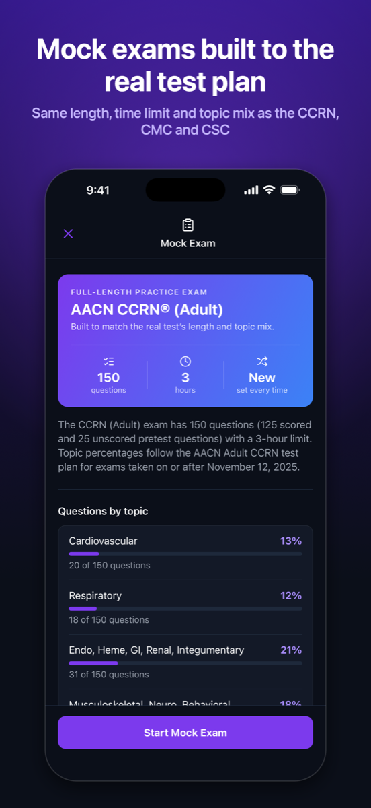
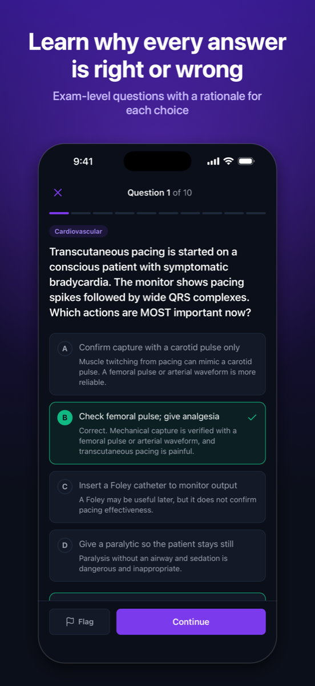
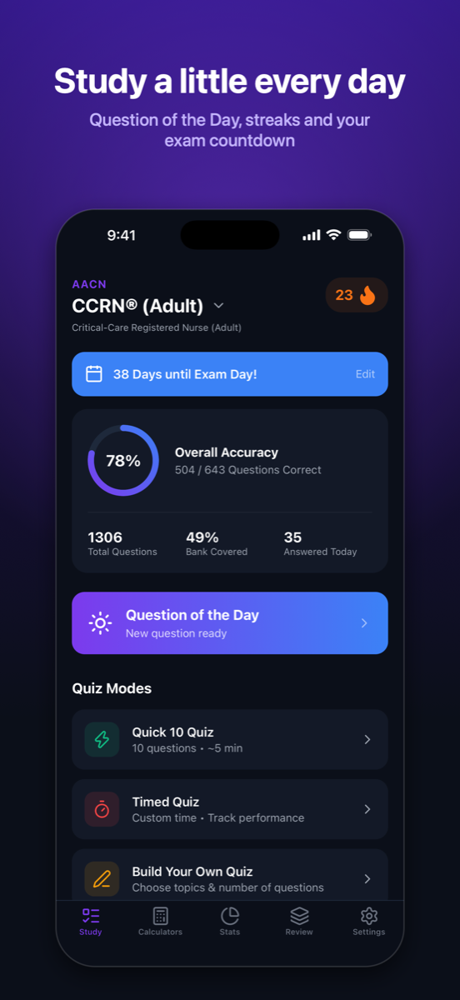
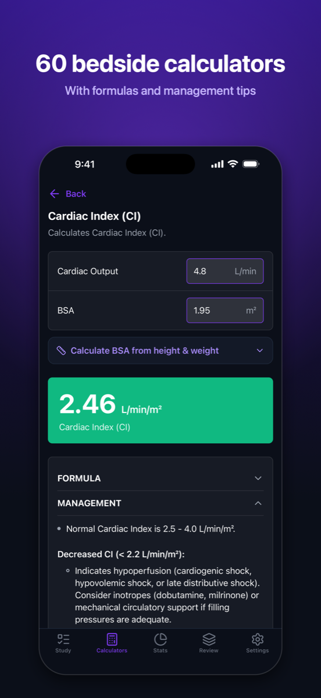

Exam-level practice questions with a rationale for every answer choice, full-length mock exams built to the official test plans, and a daily plan that fits your exam date.
iPhone and iPad. No account, works offline, your progress stays on your device.

Every question is a clinical scenario with one best answer, written to the application-and-analysis level the exams test, and every option explains why it is right or wrong.
The same number of questions, time limit and topic mix as the real test: 150 in 3 hours for the CCRN and PCCN, 90 in 2 hours for the CMC and CSC. A new set every time, and you can leave and pick up where you left off.
ECG rhythms, arterial and PA waveforms, IABP timing and capnography, drawn right in the app so you learn to read them, not just name them.
Choose a daily goal: finish the bank by exam day, or a set number of questions. One tap starts a session, and spaced repetition brings misses back right before you would forget them.
Accuracy by topic, mock exam scores over time, and a readiness estimate weighted to the exam's blueprint, with your weakest topic called out.
Cardiac index, SVR, oxygen delivery, corrected sodium, anion gap, free water deficit and more, with formulas and what to do with the result.
No account, no sign-in, nothing sent anywhere. Everything is stored on your device, and you can back it up to a file and restore it on a new phone.
Tap any key term in an explanation for a quick definition. Flag questions, add notes, and search the whole bank.



Switch exams any time. Questions that fit more than one exam appear in each, mapped to that exam's topics.
1,333 questions · 150-question, 3-hour mock exams on the current test plan
906 questions · progressive-care content, 150-question mock exams
779 questions · cardiac medicine subspecialty, 90-question mock exams
566 questions · cardiac surgery subspecialty, 90-question mock exams
149 questions · algorithms, rhythms and drugs updated to the 2025 guidelines, 50-question mock exams
New · built to the 2027 content outline that replaces the TMC and CSE, with 160-question, 4-hour mock exams; the bank is growing
656 questions · fundamentals for new critical care nurses and students
Emergency nursing, in development
In development
In development
No. Every question is original, written to the published test plans and the application-and-analysis style of the exams, then reviewed for accuracy and for the "tells" that let test-wise nurses guess. ICU Basics is an independent study tool and is not affiliated with the certifying bodies.
Each mock draws a fresh set at random, with the number of questions per topic matched to the percentages in the official test plan and the same time limit as the real exam. You can skip, go back, flag, and review everything before you submit, and you can leave and resume later.
No account, and yes: everything ships with the app and runs on your device. Nothing is sent to a server. Use Settings → Back up progress to save a file to iCloud Drive or Files before switching phones.
It blends your recent mock exam scores with your topic accuracy, weighted to the exam's blueprint, and shows how much data it is based on. It is an estimate of current performance to guide your studying, not a prediction that you will pass.
Tap "Report a problem with this question" under any explanation. It opens an email with the question already filled in, and every report is reviewed.
Not yet. ICU Basics is on iPhone and iPad today; Android is planned.
Set your exam date, pick a daily goal, and let the app keep you on track.
Download on theApp Store